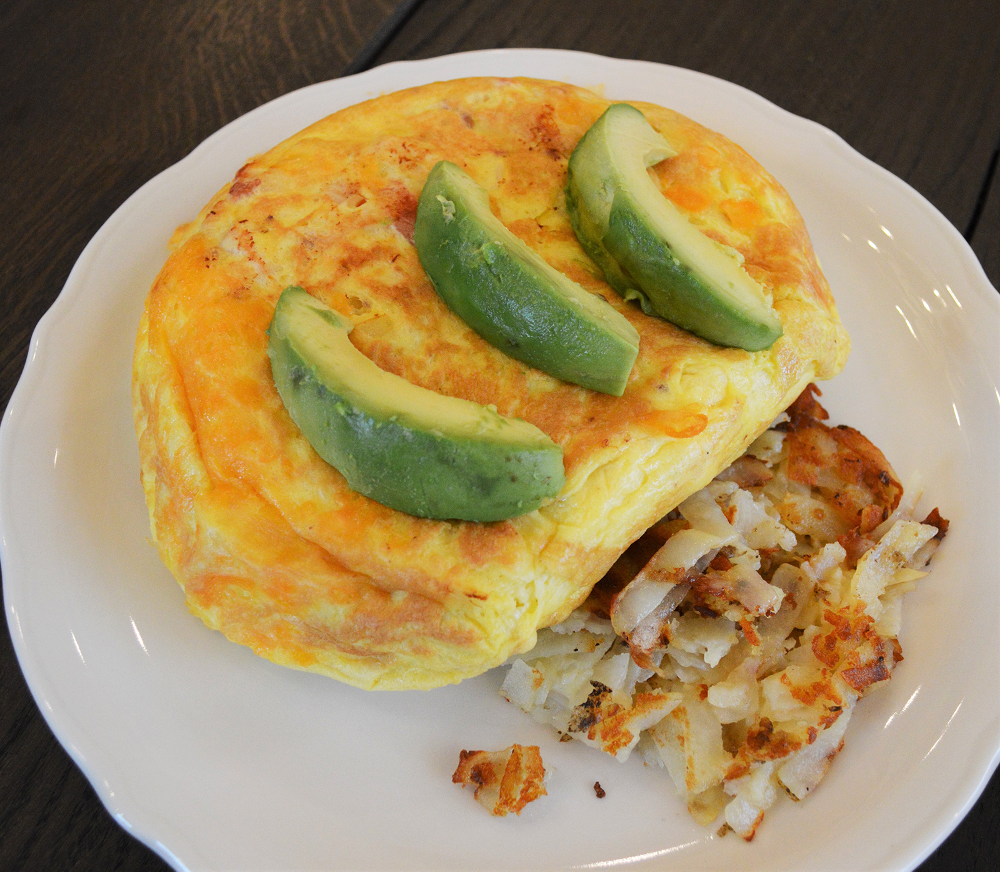

Omelette

Description
My favorite savory breakfast meal for any meal of the day. Packed with fat and protein to keep me energized on a busy day.
Ingredients
- Eggs
- Cheese
- Mushroom
- Spinach
- Onion
- Pepper
- Ham
- Turkey
- Avocado
Steps
- Crack 6 eggs into bowl
- Add 4-6oz of milk
- Add a splash of water
- Whip egg yolk and milk into a fine thick liquid
- Place sliced veggies and strips of meat into pan, cook on medium/low
- Pour egg yolk liquid into pan evenly, cook on medium
- Press angled wooden spatula into all sides of egg to compress together
- Empty all veggies/meat into one side of omelette
- Add your cheese of choice
- Fold empty side of egg over and on top of toppings
- Place lid over the top of the pan to cook thoroughly
- Place omelette on plate when finished and add avocado slices
- Voila!